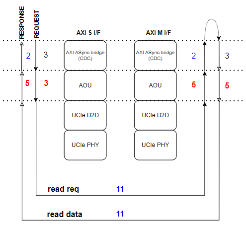
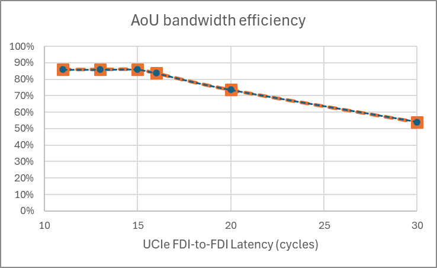
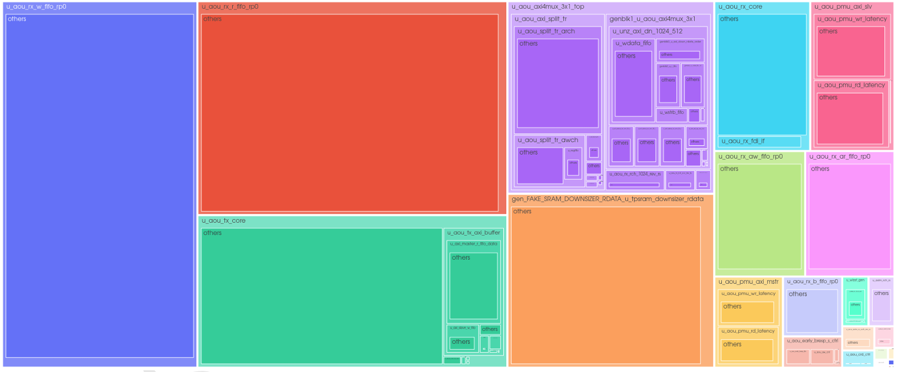

AoU PPA
PPA
Performance
Performance evaluation is conducted in both 512-bit local die and 512-bit remote die environments. The initial latency is measured from the AXI input of the local AOU_CORE to the AXI output of the remote AOU_CORE.
Table 1 lists the measured latency of each AXI channel in a back-to-back connection.
| AXI Channel | AoU Latency on B2B connection |
|---|---|
Read Request (AR) |
9 |
Read Data (R) |
11 |
Write Request (AW) |
12 |
Write Data (W) |
12 |
Write Response (B) |
10 |
Misc |
9 |
The reason of two additional latency for AW and W CH is from WLAST signal generator, and data width converter.
Figure 1 shows the initial transfer latency when AOU_CORE is connected through UCIe.

Figure 2 shows how bandwidth efficiency varies with UCIe FDI latency.

The results of efficiency measurements for read and write operations with varying burst lengths are presented. For write operations, two cases were evaluated. Normal Write and Write Full, where no write strobe bits are transmitted. The measured values and the corresponding expected values are as follows.
Table 2 compares measured and expected efficiency across burst lengths and write modes.
Data transfer efficiency |
Uni-direction transfer |
Bi-direction transfer |
|||
AXI burst length |
Data type |
Measured |
AoU limit by spec |
Measured |
AoU limit by spec |
16 burst |
Read data |
85.3%* |
85.7% |
85.3% |
84.6% |
Write data |
79.0% |
79.0% |
78.5% |
78.7% |
|
WriteFull data** |
84.2% |
84.6% |
84.2% |
84.2% |
|
1 Burst |
Read data |
85.3% |
85.7% |
71.9% |
70.6% |
Write data |
66.7% |
66.7% |
63.3% |
63.1% |
|
WriteFull data |
70.3% |
70.6% |
67.0% |
66.7% |
-
0.4% performance drop is not from IP, but just from transfer data size. If the transfer data size is the multiples of 6 burst such 132 beats, it shows the same performance number with the limit in AoU spec. Everything is the same case. Note that the efficiency is measured with 128/(cycle_from_1st_valid_to_last_valid + 1), where 1 is the hidden bubble right before the first valid. It is indispensable since AoU data message size can not covered in a single 64B chunk, unlike local AXI bus.
Power
TBD
Area
Figure 3 shows the area contribution of each submodule in a single-resource-plane AoU.

The area for each 1 RP AOU submodule is shown in the figure above.
Among them, the RX_W_FIFO and RX_R_FIFO, which store write data and read data respectively, occupy the largest portion of the AOU area. These FIFOs are currently implemented as register-based FIFOs.
FIFO Depths : TX = 2 entries / RX = 88 entries for R/W data, and 44 entries for AW/AR/B. The 88-entry default for R/W data applies when FDI_CONFIG selects a non-1024b interface; the 1024b configurations (FDI_CFG_SP_128B / FDI_CFG_TP_64B_128B) default to 140 entries, which proportionally increases the R/W FIFO area component. The Expected R/W data for 128GBs/s is 176 entries.
v0.4 AOU_CORE
With 2 RP, each AXI bandwidth is 512 bit and 256 bit, AOU_CORE area was 197k um^2.
The FIFO depth of the two RPs are identical.
Table 3 compares the reported area across resource-plane configurations.
| AoU Area (um^2) | 64GB/s |
|---|---|
1RP |
(AXI : 512bit) |
97K |
2RP |
(AXI : 256bit & 512bit) |
197K |